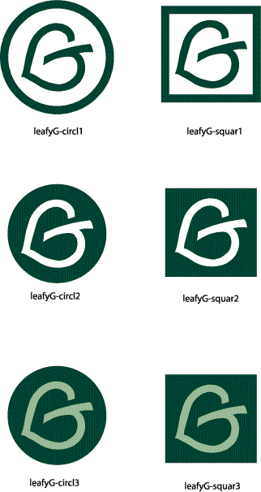

File Formats:GIF - Good for web sites. Does not scale well.This Zip file contains all logos in both file formats. To download, right-click the link then choose "Save target as..." or "Save link as..."
WMF - Good for print documents. Can be scaled to size.
